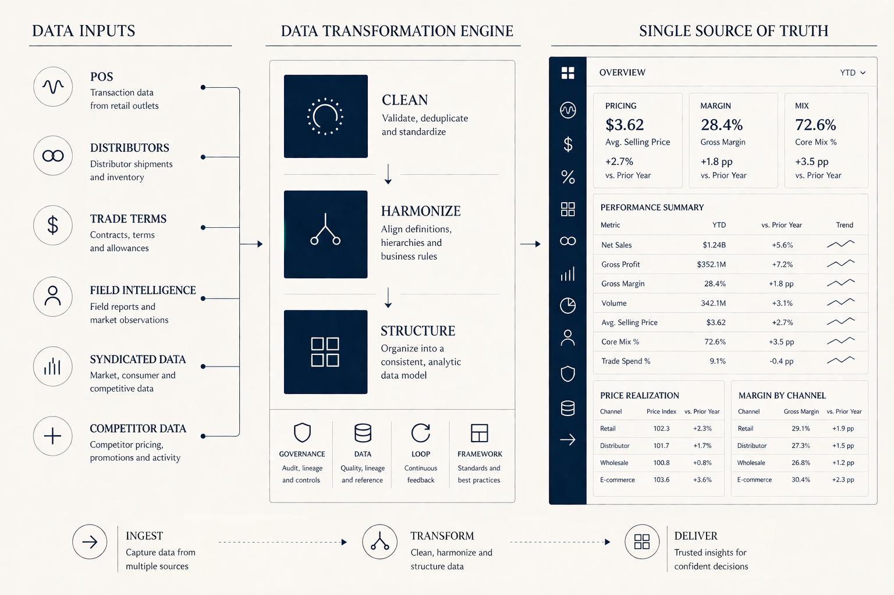
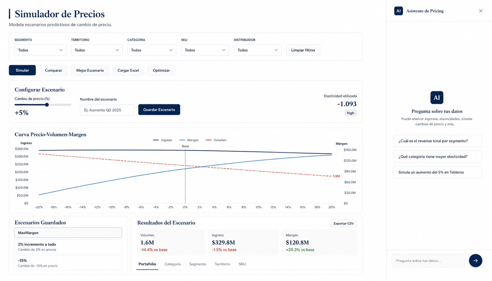

Most commercial decisions are made blind. Not for lack of talent — for lack of a system. We build it. Connecting data, decisions, and execution end-to-end. Deployed where the need is greatest. Integrated with what works. Replacing what doesn't.
Not a tool. Not a project. A working system.
Most companies can answer some of these questions.
Very few can act on them — consistently, at scale.
And most importantly: how do we turn those decisions into actions in the field — and make them stick?
From decision to execution — and back again.
Built to work as a full loop — or deployed where the need is greatest.

